Trabajo / Bajo el agua
Bajo el agua
Vida en el arrecife, naufragios, buceos nocturnos y los tramos de arena silenciosos entre uno y otro.
Trabajo seleccionado — arrecife, naufragios y buceos nocturnos
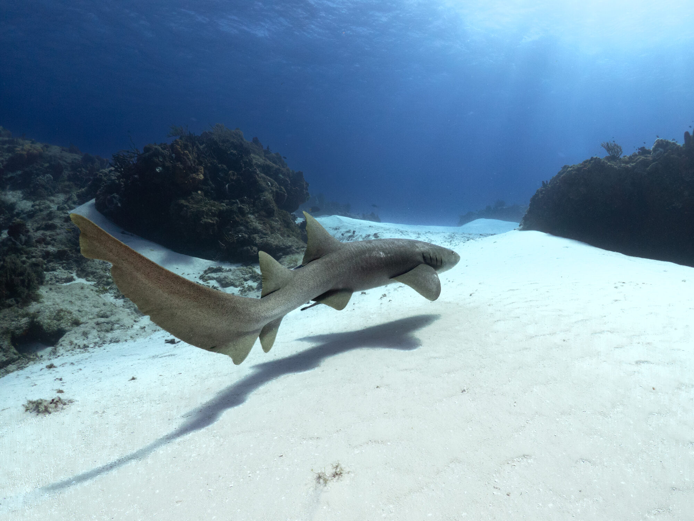
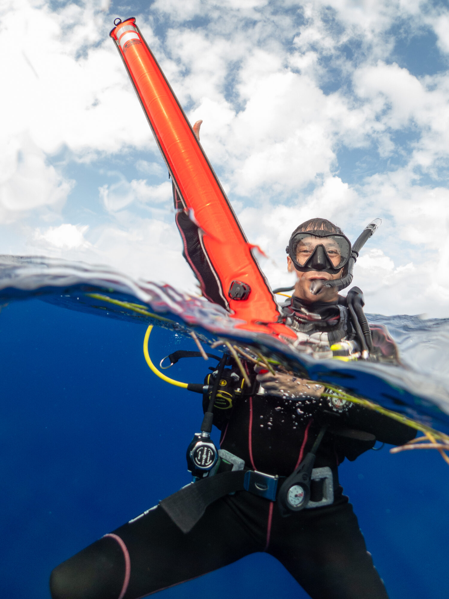
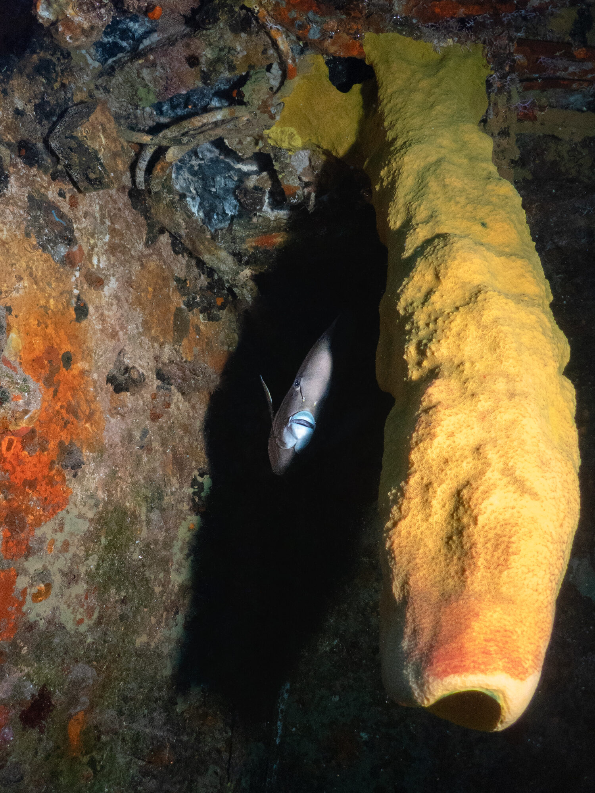
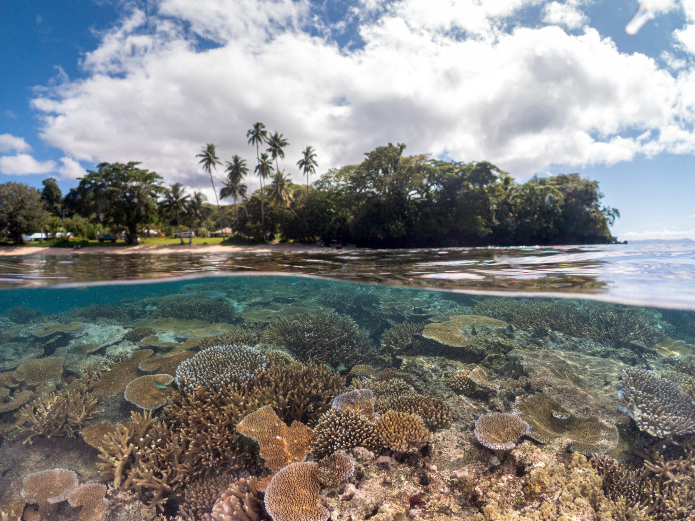
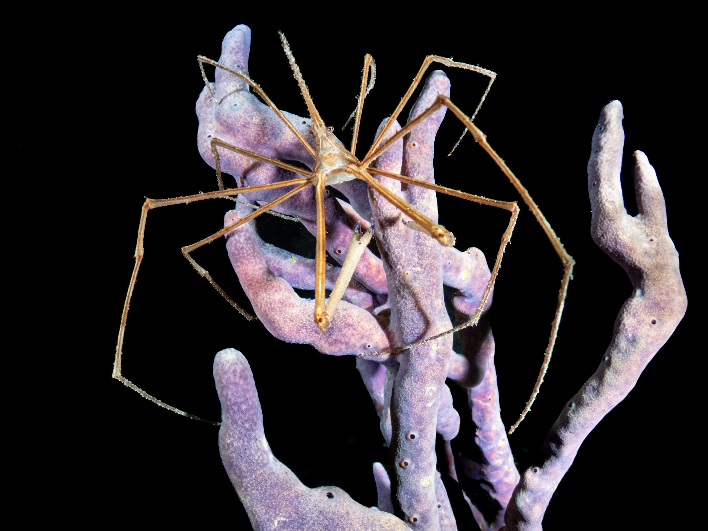
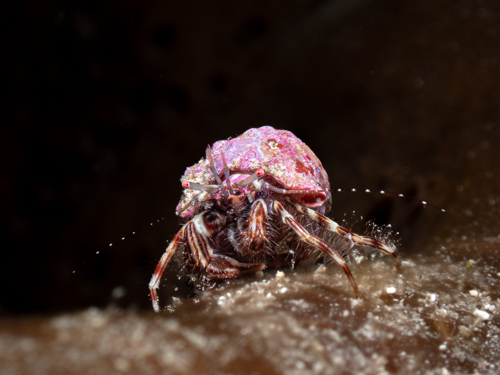
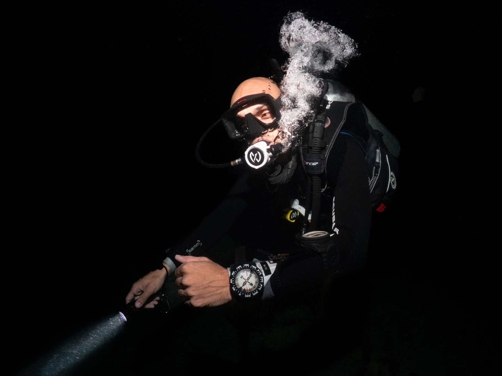
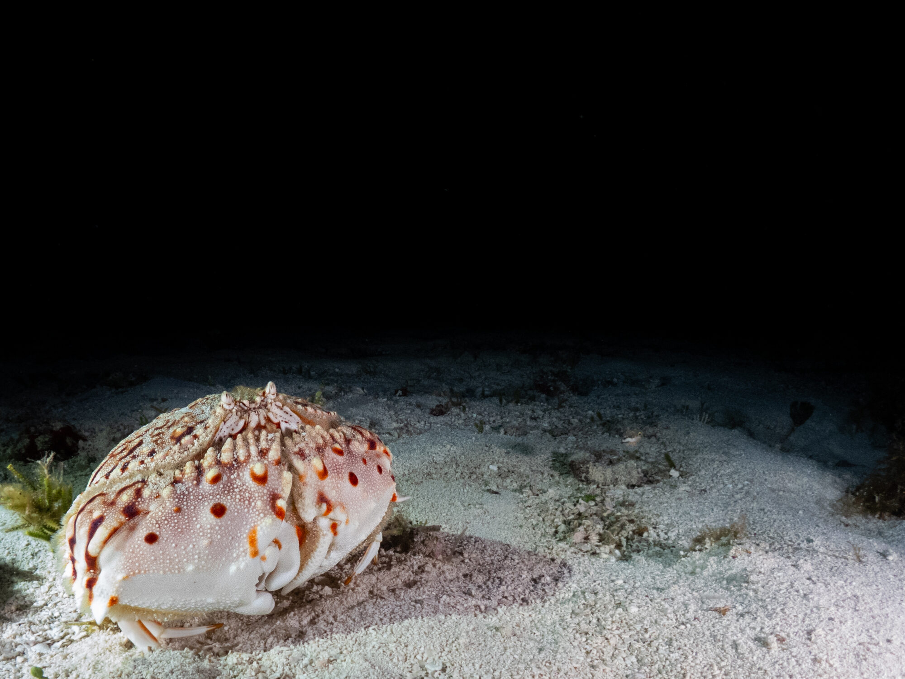
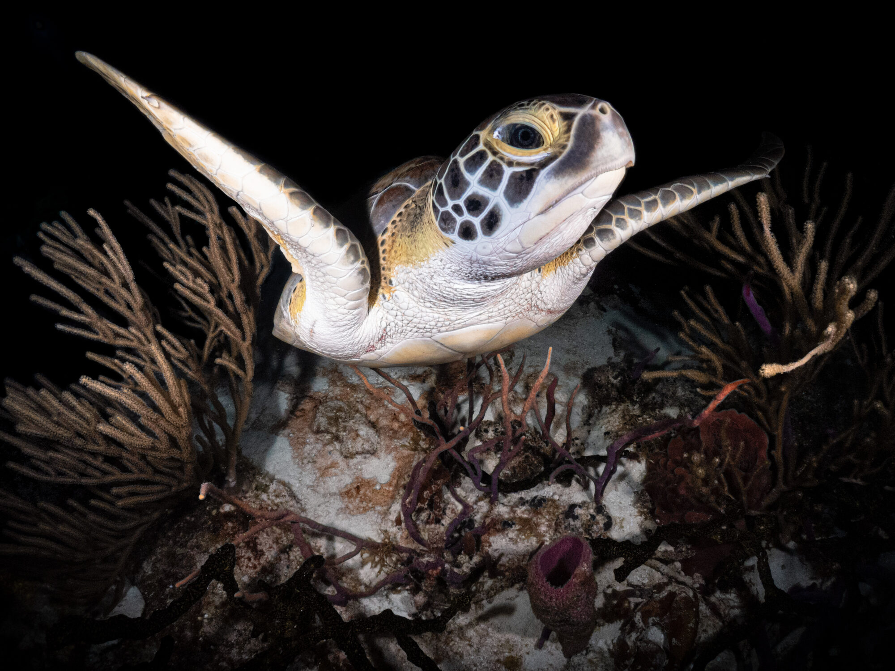
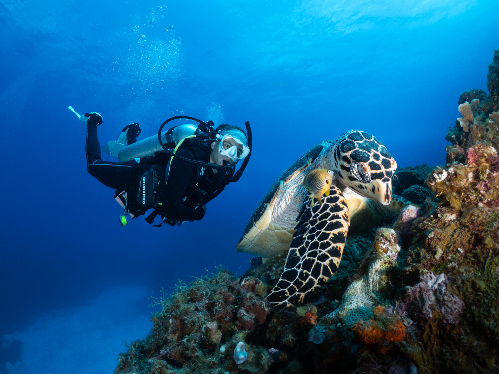
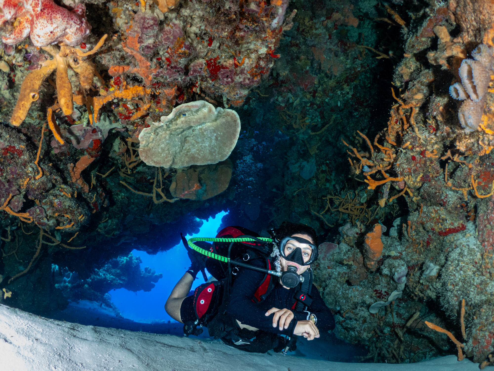
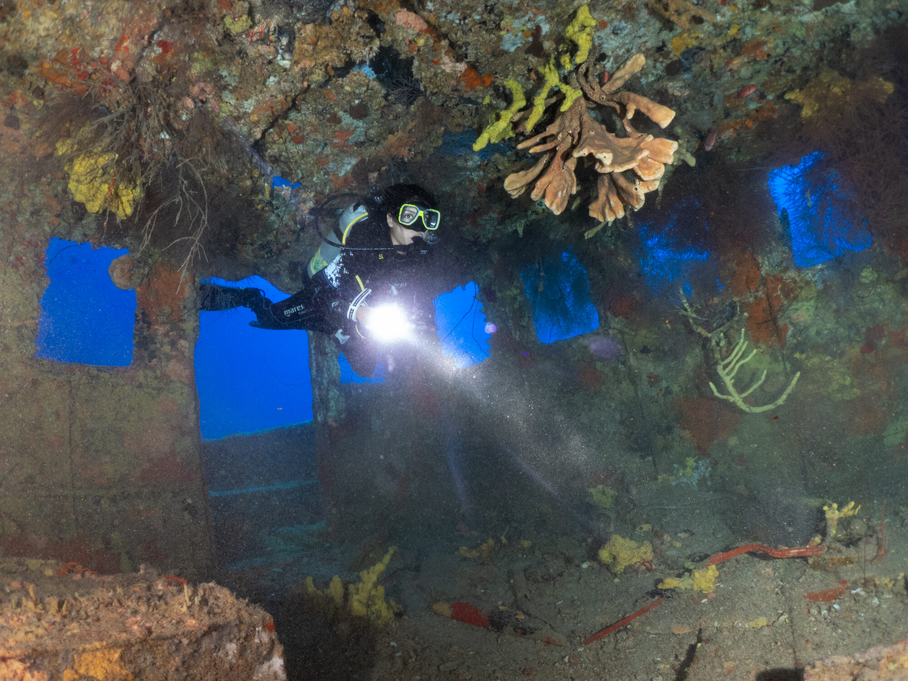